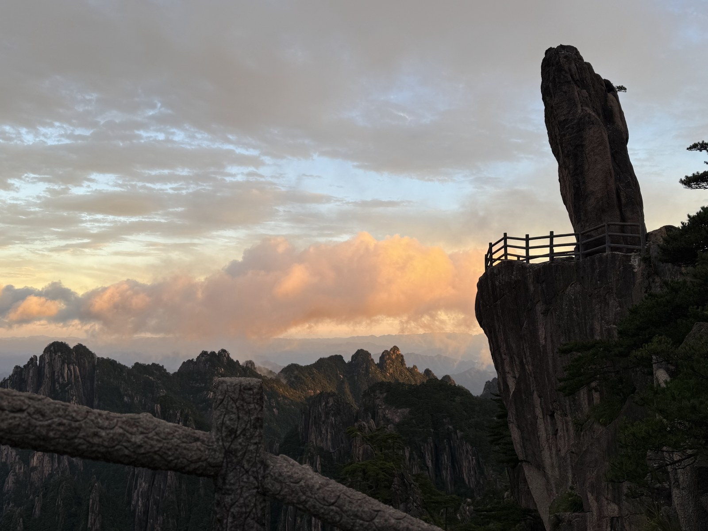
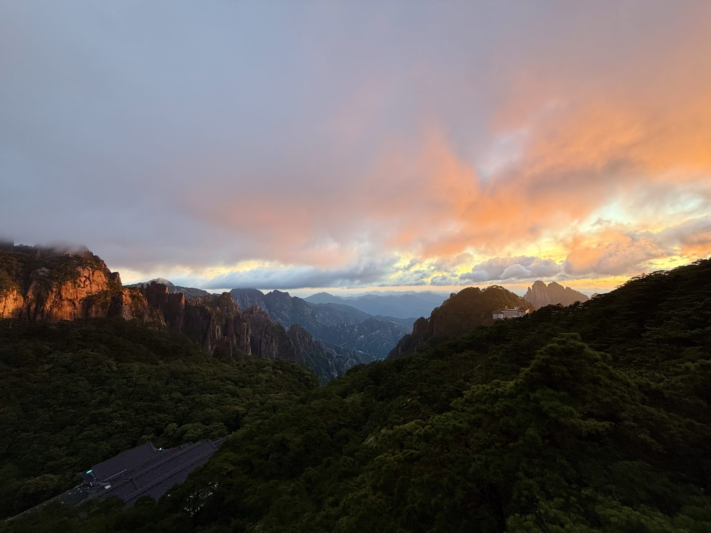
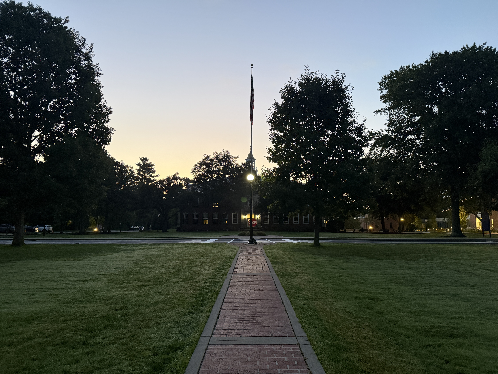
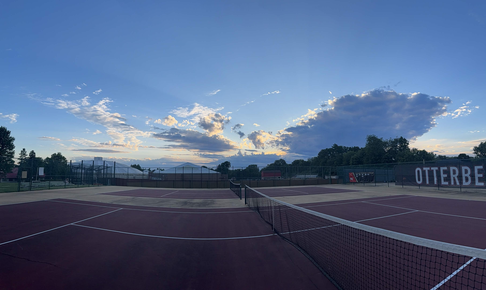
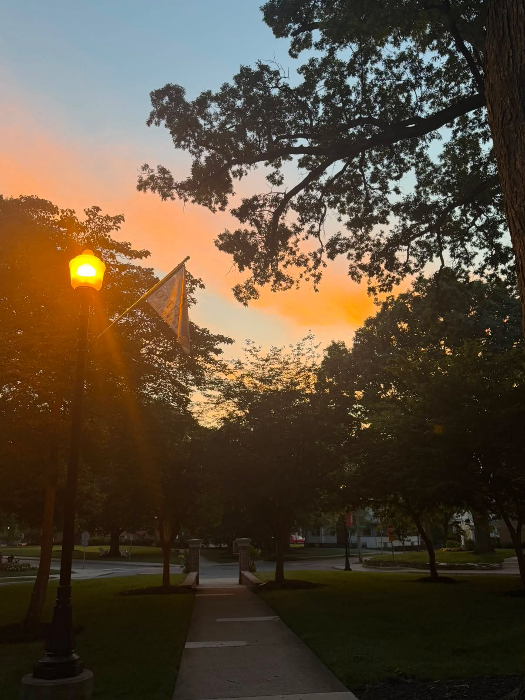
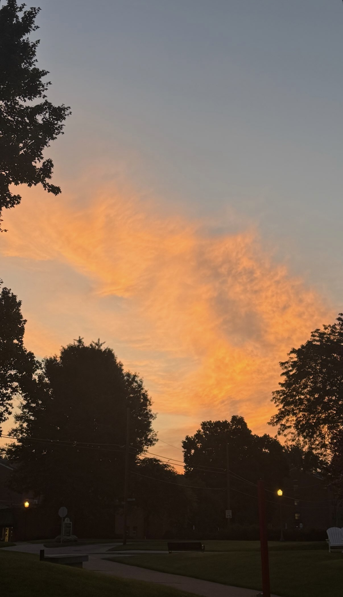
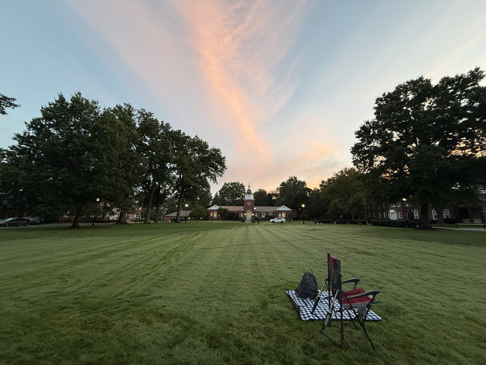

I’m an early riser, and sunrises are most of the reason I don’t fight it. There’s a version of the day that only lasts about fifteen minutes — the light low and gold, nobody else awake — and I’ve gotten a little hooked on catching it. Sunsets count too; I’m not picky about which end of the day the good light decides to show up.
The best one I’ve ever seen was Huangshan, in China, at dawn. You’re above the clouds, the peaks poke through like islands, and the whole range goes gold at once. Nothing I’ve managed to shoot of it comes close, but I keep trying anyway.


A lot of the habit got locked in this past summer at the Ross program. The campus was dead quiet at that hour, and I’d be out on the quad before almost anyone else was up, watching the light come across the grass. It made the long days that followed feel like they’d at least started on my terms.

Some mornings the sky did most of the work — a wide, high ceiling of cloud catching color over an empty field before anyone had shown up to use it.

Not all of the good ones are mornings, though. Some of my favorites are the last few minutes of a day: the sky doing something ridiculous behind a row of trees, a single lamppost flicking on like it thinks it can compete.


You can catch a good one almost anywhere if you’re paying attention — a parking lot, a field, two empty chairs on a lawn. Half of it is just remembering to look up at the right time.

None of this is complicated. I like being awake for the quiet part of the day, and I like that the sky puts on a show whether or not anyone bothers to watch. Setting an alarm for it still feels like a fair trade.